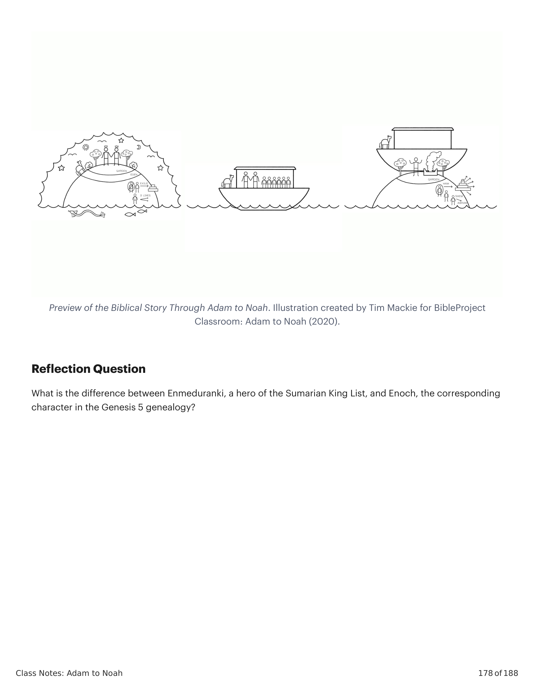

Após os humanos serem exilados do Éden, e após o drama que divide a família de Adão e Eva em duas linhagens, a narrativa reinicia e começa de novo. Desta vez, a genealogia segue a linhagem de Sete, com a linhagem de Caim tendo sido concluída com Leméque e seus filhos. Esta genealogia tem uma forma altamente esquemática, o que faz com que os três insertos narrativos se destaquem. Gênesis 5:1-32 lista 10 gerações de Adão a Noé, cada uma dada em uma forma literária idêntica: "e __ viveu __ anos, e gerou [nome do filho]. e __ viveu __ anos depois que gerou [nome do filho], e gerou filhos e filhas, e todos os dias de __ foram __ anos, e ele morreu." Há três figuras cuja entrada genealógica desvia desta forma, e precisamente nestes três pontos encontramos insertos narrativos que destacam temas significativos em Gênesis. Preste especial atenção a Adão, Enoque, e Leméque/Noé.After the humans are exiled from Eden, and after the drama that splits Adam and Eve's family into two lines, the narrative reboots and begins again. This time, the genealogy follows the line of Seth, with Cain's line having been concluded with Lemek and his sons. This genealogy has a highly schematic form, which makes the three narrative inserts stick out. Genesis 5:1-32 lists 10 generations from Adam to Noah, each one given in an identical literary form: "and __ lived __ years, and he caused the birth of [son's name]. and __ lived __ years after he caused the birth of [son's name], and he caused the birth of sons and daughters, and all the days of __ were __ years, and he died." There are three figures whose genealogical entry deviates from this form, and at precisely these three points, we find narrative inserts that highlight significant themes in Genesis. Pay special attention to Adam, Enoch, and Lemech/Noah.
| GeraçãoGeneration | VersículoVerse | PessoaPerson | IdadeAge |
|---|---|---|---|
| 11 | 5:1-2, 3a5:1-2, 3a | Narrative InsertNarrative Insert | 930yrs930yrs |
| 11 | 5:3-55:3-5 | AdamAdam | |
| 22 | 5:6-85:6-8 | SethSeth | 912yrs912yrs |
| 33 | 5:9-115:9-11 | EnoshEnosh | 905yrs905yrs |
| 44 | 5:12-145:12-14 | CainanCainan | 910yrs910yrs |
| 55 | 5:15-175:15-17 | MahalalelMahalalel | 895yrs895yrs |
| 66 | 5:18-205:18-20 | YaredYared | 962yrs962yrs |
| 77 | 5:21-245:21-24 | EnochEnoch | 365yrs365yrs |
| Ten Generations from Adam to Noah. Created by Tim Mackie for BibleProject Classroom: Adam to Noah (2020).Ten Generations from Adam to Noah. Created by Tim Mackie for BibleProject Classroom: Adam to Noah (2020). | |||
Parece muito provável que o autor de Gênesis tenha se apropriado de tradições mesopotâmias das gerações da humanidade antes do dilúvio e as adaptado estrategicamente para seus próprios propósitos teológicos e de comunicação. Havia uma crença difundida na Assíria e Babilônia antigas de que as raízes mais antigas da civilização e da realeza vieram dos deuses desde antes do tempo do dilúvio. Estas tradições são expressas em uma série de textos antigos chamados Listas dos Reis Sumeros, que são encontradas em múltiplas versões. A Lista dos Reis Sumeros Comparada com Gênesis 5: Há 10 reis da criação da realeza ao dilúvio e logo após o dilúvio / Há 10 gerações de Adão ao dilúvio de Noé, que vive após o dilúvio. O primeiro rei, Alulim, é designado pelos deuses mais antigos / Adão e Eva (= 'adam, "humanidade") é designado como a imagem real de Deus para governar toda a criação. O rei final é escolhido para sobreviver ao dilúvio / Noé, o décimo, é escolhido para sobreviver ao dilúvio. Os 10 reis governam por períodos hiperbolicamente longos / Os 10 patriarcas vivem por longos períodos de tempo (Adão 930, Sete 912, Enos 905, Quenã 910, Maalalel 895, Jarede 962, Enoque 365, Metuselá 969, Leméque 777, Noé 950). O sétimo rei, Enmeduranki, é elevado à assembleia divina e tem um papel único entre os deuses / O sétimo patriarca, Enoque, não morre mas é transferido ao reino de Deus por sua relação especial com Deus.It seems very probable that the author of Genesis has drawn upon ancient Mesopotamian traditions of the generations of humanity before the flood and strategically adapted them for his own theological and communication purposes. There was a widespread belief in ancient Assyria and Babylon that the most ancient roots of civilization and kingship came from the gods from before the time of the flood. These traditions are expressed in a series of ancient texts called The Sumerian King Lists, which are found in multiple versions. The Sumerian King List Compared with Genesis 5: There are 10 kings from the creation of kingship to the flood and right after the flood / There are 10 generations from Adam to the flood of Noah, who lives after the flood. The first king, Alulim, is appointed by the oldest gods / Adam and Eve (= 'adam, "humanity") is appointed as the royal image of God to rule all creation. The final king is chosen to survive the flood / Noah, the tenth, is chosen to survive the flood. The 10 kings rule for hyperbolically long periods of time / The 10 patriarchs live for long periods of time (Adam 930, Seth 912, Enosh 905, Qenan 910, Mahalalel 895, Yared 962, Enoch 365, Methushelah 969, Lemek 777, Noah 950). The seventh king, Enmeduranki, is brought up into the divine assembly and has a unique role among the gods / The seventh patriarch, Enoch, does not die but is translated to God's realm because of his special relationship with God.
| As Listas de Reis SumériosThe Sumerian King Lists | Gênesis 5Genesis 5 |
|---|---|
| There are 10 kings from the creation of kingship to the flood and right after the flood.There are 10 kings from the creation of kingship to the flood and right after the flood. | There are 10 generations from Adam to the flood of Noah, who lives after the flood.There are 10 generations from Adam to the flood of Noah, who lives after the flood. |
| The first king, Alulim, is appointed by the oldest gods.The first king, Alulim, is appointed by the oldest gods. | Adam and Eve (= 'adam, "humanity") is appointed as the royal image of God to rule all creation.Adam and Eve (= 'adam, "humanity") is appointed as the royal image of God to rule all creation. |
| The final king is chosen to survive the flood.The final king is chosen to survive the flood. | Noah, the tenth, is chosen to survive the flood.Noah, the tenth, is chosen to survive the flood. |
| The 10 kings rule for hyperbolically long periods of time.The 10 kings rule for hyperbolically long periods of time. | The 10 patriarchs live for long periods of time.The 10 patriarchs live for long periods of time. |
| Alulim 67,200/28,800 · Alalgar 72,000/36,000 · Kidunnu 72,000/43,200 · Alimma 21,600/28,800 · Dumuzi 21,600/36,000 · Enmenluanna 21,600/28,800 · Enmeduranki 36,000/21,000 · Enmeduranna 72,000/18,000 · Ubartutu 28,000 · Ziusudra 36,000Alulim 67,200/28,800 · Alalgar 72,000/36,000 · Kidunnu 72,000/43,200 · Alimma 21,600/28,800 · Dumuzi 21,600/36,000 · Enmenluanna 21,600/28,800 · Enmeduranki 36,000/21,000 · Enmeduranna 72,000/18,000 · Ubartutu 28,000 · Ziusudra 36,000 | Adam 930 · Seth 912 · Enosh 905 · Qenan 910 · Mahalalel 895 · Yared 962 · Enoch 365 · Methushelah 969 · Lemek 777 · Noah 950Adam 930 · Seth 912 · Enosh 905 · Qenan 910 · Mahalalel 895 · Yared 962 · Enoch 365 · Methushelah 969 · Lemek 777 · Noah 950 |
| Similarities Between the Sumerian King List and Genesis 5. Created by Tim Mackie for BibleProject Classroom: Adam to Noah (2020).Similarities Between the Sumerian King List and Genesis 5. Created by Tim Mackie for BibleProject Classroom: Adam to Noah (2020). | |
Parece que o autor de Gênesis 5 está adaptando uma tradição mesopotâmica comum sobre as 10 gerações das origens da realeza ao dilúvio. A cada passo, a história lança uma crítica implícita à reivindicação da Babilônia de origens divinas e oferece uma história alternativa. Os deuses da Babilônia não originaram a humanidade ou a realeza. Em vez disso, Yahweh, o Deus de Israel, criou "humanidade" ('adam) como macho e fêmea à imagem de Deus. Toda a humanidade foi feita para governar. Os reinados fantasticamente longos dos reis sumeros eram imagens literárias de sua natureza e governo divinos. Em contraste, as vidas longas dos patriarcas em Gênesis 5 terminam todas com a morte. Isto é parte de uma estratégia que mostra que a perda do Éden e a crescente distância e alienação do criador resultam no diminuimento da vida. O sétimo rei, Enmeduranki, foi elevado ao reino dos deuses, onde se tornou a fonte do conhecimento divino secreto dado aos adivinhos babilônios de elite. Em contraste, o sétimo patriarca de Gênesis 5, Enoque, é único por sua piedade e comunhão com Deus, o que resulta em sua evasão da morte e o dom da vida eterna no Éden. Gênesis 5 é uma versão israelita dos conceitos expressos na Lista dos Reis Sumeros que reivindicava autoridade divina para os reis da Babilônia. O autor bíblico subverte essas reivindicações e oferece uma versão revisionista, que coloca as origens de Israel dentro destes patriarcas real-sacerdotais, cujas histórias prefiguram o papel único que Israel desempenhará entre as nações mais tarde na história. O rei e o sumo sacerdote se tornarão "novos Adões," e restaurarão o Éden através de seus ministérios real e sacerdotal. Os sacerdotes encarnarão um "novo Enoque," e "andarão com Deus" no templo em favor de Israel e abrirão o caminho para a vida eterna no Santo dos Santos. Moisés, os sacerdotes, e Davi encarnarão "novos Noés," e clamarão a Deus em meio ao juízo divino e serão livrados para que possam oferecer intercessão em favor de outros.It appears that the author of Genesis 5 is adapting a common Mesopotamian tradition about the 10 generations from the origins of kingship to the flood. At each step, the story launches an implicit critique of Babylon's claim to divine origins and offers an alternative story instead. The gods of Babylon did not originate humanity or kingship. Rather, Yahweh, the God of Israel, created "humanity" ('adam) as male and female in God's image. All humanity was made to rule. The fantastically long reigns of the Sumerian kings were literary images of their divine nature and rule. In contrast, the long lives of the patriarchs in Genesis 5 are all ended by death. This is part of a strategy showing that the loss of Eden and the increasing distance and alienation from the creator results in the diminishment of life. The seventh king, Enmeduranki, was elevated to the realm of the gods, where he became the source of secret divine knowledge given to the elite Babylonian diviners. In contrast, the seventh patriarch of Genesis 5, Enoch, is unique for his piety and communion with God, which results in his evasion of death and the gift of eternal life in Eden. Genesis 5 is an Israelite version of the concepts being expressed in The Sumerian King List that claimed divine authority for Babylon's kings. The biblical author subverts those claims and offers a revisionist version, which places Israel's origins within these royal-priestly patriarchs, whose stories foreshadow the unique role that Israel will play among the nations later on in the story. The king and high priest will become "new Adams," and they will restore Eden through their royal and priestly ministries. The priests will embody a "new Enoch," and they will "walk with God" in the temple on behalf of Israel and open the way to eternal life in the holy of holies. Moses, the priests, and David will embody "new Noahs," and they will call out to God in the midst of divine judgment and be delivered so that they can offer intercession on behalf of others.
Em Gênesis 5:1-3, nos é mostrado que a linhagem prometida da semente será levada adiante através de Sete, o terceiro filho de Adão e Eva. Gênesis 5:1-3 ESV*: "1 Esta é a lista das gerações de 'adam: No dia em que Deus criou 'adam, à semelhança de Deus o fez, 2 macho e fêmea os criou, e os abençoou, e os nomeou 'adam no dia em que foram criados. 3 E Adão viveu cento e trinta anos, e gerou um filho à sua própria semelhança, conforme sua imagem, e o nomeou Sete." *Palavras-Chave Adaptadas pelo Professor. Observe que a relação de 'adam com Deus é descrita como "imagem e semelhança," o que recorda todo o significado e importância de Gênesis 1:26-28. Agora, aqui em Gênesis 5:1-3, Sete é descrito como a imagem e semelhança de seu pai, por analogia à relação de Adão com Deus. A analogia ilumina dois pontos significativos para o resto da história bíblica. Filho de Deus = Imagem de Deus: Se Sete é o "filho de Adão" e pode ser chamado de imagem de Adão, então 'adam também pode ser pensado como o "filho de Deus," o que se torna um sinônimo para "imagem de Deus." Avanço: Observe que a genealogia de Jesus em Lucas é construída sobre exatamente esta convicção, traçando Jesus como o "filho de Deus" até Adão como um "filho de Deus" (Lucas 3:23-38). Este conjunto de ideias em Gênesis 1-5 formou o modelo para narrativas posteriores na Bíblia Hebraica que retratam certos governantes humanos como "novos Adões," que recebem uma chance de ser a "imagem de Deus" e governar o mundo em nome de Deus, vencendo as forças do caos semelhantes a animais no mundo.In Genesis 5:1-3, we are shown that the promised line of the seed will be carried on through Seth, Adam and Eve's third son. Genesis 5:1-3 ESV*: "1 This is the scroll of the generations of 'adam: In the day when God created 'adam, in the likeness of God he made him, 2 male and female he created them, and he blessed them, and he named them 'adam in the day when they were created. 3 And Adam had lived one hundred and thirty years, and he became the father of a son in his own likeness, according to his image, and named him Seth." *Key Words Adapted by Teacher. Notice that 'adam's relationship to God is described as "image and likeness," and this recalls all of the meaning and significance of Genesis 1:26-28. Now, here in Genesis 5:1-3, Seth is described as his father's image and likeness, on analogy to Adam's relationship to God. The analogy illuminates two significant points for the rest of the biblical story. Son of God = Image of God: If Seth is the "son of Adam" and can be called the image of Adam, then 'adam too can be thought of as the "son of God," which becomes a synonym for "image of God." Flash Forward: Notice that Luke's genealogy of Jesus is constructed on this very conviction, tracing Jesus as the "son of God" all the way back to Adam as a "son of God" (Luke 3:23-38). This set of ideas in Genesis 1-5 formed the template for later narratives in the Hebrew Bible that depict certain human rulers as "new Adams," who are given a chance to be the "image of God" and rule the world on God's behalf, overcoming the forces of animal-like chaos in the world.
Enoque vive o menor período de tempo de todos os 10 patriarcas em Gênesis 5 — na verdade, ele é colocado entre as duas figuras de vida mais longa na genealogia, Jarede e Metuselá. Sua idade total certamente tem significado simbólico: 365 anos é o mesmo que um ano do calendário solar. A piedade de Enoque está ligada à de Adão e Eva no jardim do Éden e estabelece um padrão para personagens posteriores alcançarem. Gênesis 3:6, 8 Tradução do Instrutor: "E [Eva] tomou (לקח) do seu fruto e comeu ... E [Adão e Eva] ouviram a voz de Yahweh andando (מתהלך) no jardim." Gênesis 5:22, 25 Tradução do Instrutor: "E Enoque andou (ויתהלך) com o-elohim ... E Enoque andou (ויתהלך) com o-elohim, e ele não era, porque Elohim o tomou (לקח)." O modo de vida de Enoque encarna a comunhão com Deus que Adão e Eva experimentaram e perderam no jardim. Observe também a inversão de "tomar." O "tomar" de Adão e Eva resulta na perda de andar com Deus, enquanto o andar de Enoque com Deus resulta em ele ser "tomado."Enoch lives the shortest time span of all 10 patriarchs in Genesis 5—in fact, he is placed between the two longest-living figures in the genealogy, Jared and Methuselah. His total age surely has symbolic significance: 365 years is the same as a solar calendar year. Enoch's piety is linked to that of Adam and Eve's in the garden of Eden and sets a pattern for later characters to attain. Genesis 3:6, 8 Instructor's Translation: "And [Eve] took (לקח) from its fruit and she ate ... And [Adam and Eve] heard the voice of Yahweh walking (מתהלך) in the garden." Genesis 5:22, 25 Instructor's Translation: "And Enoch walked (ויתהלך) with the-elohim ... And Enoch walked (ויתהלך) with the-elohim, and he was no more, for God took (לקח) him." Enoch's way of life embodies the communion with God that Adam and Eve experienced and forfeited in the garden. Notice also the inversion of "taking." Adam and Eve's "taking" results in the loss of walking with God, while Enoch's walking with God results in his being "taken."
| VersículoVerse | PessoaPerson | TempoTime |
|---|---|---|
| Gen 5:3Gen 5:3 | AdamAdam | 130 + 800 = 930130 + 800 = 930 |
| Gen 5:6Gen 5:6 | SethSeth | 105 + 807 = 912105 + 807 = 912 |
| Gen 5:9Gen 5:9 | EnoshEnosh | 90 + 815 = 90590 + 815 = 905 |
| Gen 5:12Gen 5:12 | KenanKenan | 70 + 840 = 91070 + 840 = 910 |
| Lifespans of the Early Patriarchs. Adapted from Jeremy Hughes, Secrets of the Times (2009), via BibleProject Classroom: Adam to Noah (2020).Lifespans of the Early Patriarchs. Adapted from Jeremy Hughes, Secrets of the Times (2009), via BibleProject Classroom: Adam to Noah (2020). | ||
Esta frase é usada de Noé em Gênesis 6:8-9. E em 1 Samuel 25:15-16, a frase é usada para se referir a contato amigável e próximo entre pessoas. Gênesis 6:8-9 NVI: "8 Mas Noé achou graça aos olhos do Senhor. 9 Estas são as genealogias de Noé. Noé era homem justo, irrepreensível em sua geração; Noé andou com Deus." 1 Samuel 25:14-16 NASB: "14 Mas um dos jovens contou a Abigail, mulher de Nabal, dizendo: 'Eis que Davi enviou mensageiros do deserto para saudar nosso senhor, e ele os tratou com desprezo. 15 Contudo, os homens foram muito bons para conosco, e não fomos insultados, nem nos faltou coisa alguma enquanto andamos com eles, estando no campo. 16 Eles foram uma muralha para nós, de noite e de dia, todo o tempo em que estivemos com eles cuidando das ovelhas.'" "O significado da frase ... é óbvio a partir de 1 Samuel 25:15-16, onde descreve a conduta amigável cotidiana em relação ao próximo. O [autor de Gênesis 5] entendeu as palavras no sentido de que Enoque estava em uma relação direta e imediata com Deus ... e assim foi incumbido dos planos e intenções de Deus. Este é o ponto de partida para o significado que a figura de Enoque teve em uma tradição que começou cedo e atingiu sua plenitude apenas na literatura Apocalíptica." Westermann, Claus (1990). Gênesis 1-11: Comentários Continentais. Fortress Press.This phrase is used of Noah in Genesis 6:8-9. And in 1 Samuel 25:15-16, the phrase is used to refer to friendly and close contact between people. Genesis 6:8-9 NIV: "8 But Noah found favor in the eyes of the Lord. 9 These are the records of the generations of Noah. Noah was a righteous man, blameless in his time; Noah walked with God." 1 Samuel 25:14-16 NASB: "14 But one of the young men told Abigail, Nabal's wife, saying, 'Behold, David sent messengers from the wilderness to greet our master, and he scorned them. 15 Yet the men were very good to us, and we were not insulted, nor did we miss anything as long as we walked with them, while we were in the fields. 16 They were a wall to us both by night and by day, all the time we were with them tending the sheep.'" "[T]he meaning of the phrase ... is obvious from 1 Samuel 25:15-16, where it describes friendly everyday conduct with regard to one's neighbors. The [author of Genesis 5] understood the words in the sense that Enoch stood in a direct and immediate relationship to God ... and so was entrusted with God's plans and intentions. This is the starting point for the significance that the figure of Enoch had in a tradition that began early and reached its fullness only in the Apocalyptic literature." Westermann, Claus (1990). Genesis 1-11: Continental Commentaries. Fortress Press.
Embora não se reflita no inglês, a palavra elohim em 5:22 e 5:24 tem o artigo definido "o" na frente dela (האלהים). A frase "o elohim" pode ser usada para se referir à única divindade Yahweh, mas também pode ser uma maneira de se referir a seres espirituais, membros do conselho divino, ou anjos. Observe também que na frase "pois Deus o tomou," a palavra elohim não tem o artigo definido. Em outras palavras, Enoque anda com o elohim, e assim Elohim o toma. Esta distinção parece ser significativa: a vida de Enoque era marcada por relações amigáveis e íntimas com os seres do reino espiritual (o elohim), e assim o Elohim principal (chamado Yahweh mais tarde na história) o toma. Era assim que a história era universalmente entendida no judaísmo antigo.Although it is not reflected in English, the word elohim in 5:22 and 5:24 has the definite article "the" in front of it (האלהים). The phrase "the elohim" can be used to refer to the single deity Yahweh, but it can also be a way of referring to spiritual beings, members of the divine council, or angels. Notice also that in the phrase "for God took him," the word elohim does not have the definite article. In other words, Enoch walks with the elohim, and so Elohim takes him. This distinction seems like a meaningful one: Enoch's life was marked by friendly and intimate relations with the beings of the spiritual realm (the elohim), and so the chief Elohim (named Yahweh later in the story) takes him. This was how the story was universally understood in ancient Judaism.
| JaredJared | EnochEnoch | MethuselahMethuselah |
|---|---|---|
| and he died.and he died. | Gen 5:24 and Enoch walked with God; and he was no more, for God took him.Gen 5:24 and Enoch walked with God; and he was no more, for God took him. | and he died.and he died. |
| How Enoch Breaks the Pattern. Created by Tim Mackie for BibleProject Classroom: Adam to Noah (2020).How Enoch Breaks the Pattern. Created by Tim Mackie for BibleProject Classroom: Adam to Noah (2020). | ||
A antecipação de Leméque de um descendente futuro em Gênesis 5:29 que trará um fim à maldição retoma o macrotema do exílio da humanidade do Éden e da maldição da morte e a promessa de uma "semente" vindoura que vencerá a serpente e sua obra. Gênesis 5:29 NASB*: "E chamou seu nome 'Noé (נח),' dizendo: 'Este nos trará descanso (נחם) de nossa obra (מעשה) e do penoso trabalho (עצבון) de nossas mãos, da terra (האדמה) que o Senhor amaldiçoou (אררה).' *Palavras-Chave Adaptadas pelo Professor. O nome de Noé recebe significado teológico significativo por meio de trocadilho. 'Noé' (נח) // 'descanso' (נוח) // 'consolo' (נחם). O nome de Noé é soletrado como a palavra 'descanso,' e rima com as duas primeiras letras da palavra 'consolo.' Gênesis 2:15 Tradução do Instrutor: 'E Yahweh Elohim tomou o humano e o fez descansar (וינחהו) no jardim do Éden, para o cultivar (עבד) e guardar.' Gênesis 3:17, 19 Tradução do Instrutor: 'Maldita é a terra (ארורה האדמה) por sua causa; com penoso trabalho (עצבון) comerá dela ... até que retorne à terra (האדמה), pois dela foste tomado ...' Por meio desta associação, o papel de Noé na história é antecipado e recebe uma interpretação teológica. Seus atos obedientes e seu papel como remanescente sobrevivente na geração do dilúvio são as maneiras pelas quais Deus traz descanso e consolo ao seu mundo. Descanso (נוח) é um tema teológico maior no TaNaK, pois é frequentemente usado para descrever a restauração das condições do Éden na Terra como nos Céus. Consolo (נחם) é um tema maior nos Profetas, especialmente Isaías, e descreve a era de restauração quando a falha do povo de Deus é perdoada, seu exílio termina, e Deus renova a aliança com eles em um Éden restaurado. Tudo isso aponta adiante para o ato crucial de adoração e obediência de Noé ao emergir da arca em Gênesis 8:20-22. No arco narrativo de Gênesis 2-9, Noé é apresentado ao leitor como uma imagem da semente prometida de Gênesis 3:15. Ele é a semente justa que passa no teste através da obediência à vontade de Deus e sobrevive como um remanescente através das águas da morte para oferecer um sacrifício precioso. Isto o qualifica a se tornar a nova humanidade ao leme de uma criação renovada que vive em uma nova relação de aliança com seu criador. Esta narrativa forma o modelo temático para cada história a seguir no resto da Bíblia Hebraica.Lemek's anticipation of a future descendant in Genesis 5:29 who will bring an end to the curse picks up the macro theme of humanity's exile from Eden and the curse of death and the promise of a coming "seed" who will overcome the snake and its work. Genesis 5:29 NASB*: "And he called his name 'Noah (נח),' saying, 'This one will give us comfort (נחם) from our work (מעשה) and from the painful toil (עצבון) of our hands, from the ground (האדמה) which the Lord has cursed (אררה).'" *Key Words Adapted by Teacher. Noah's name is given significant theological meaning by means of wordplay. "Noah" (נח) // "rest" (נוח) // "comfort" (נחם). Noah's name is spelled like the word "rest," and it rhymes with the first two letters of the word "comfort." Genesis 2:15 Instructor's Translation: "And Yahweh Elohim took the human and he rested him (וינחהו) in the garden of Eden, to work it (עבד) and to keep it." Genesis 3:17, 19 Instructor's Translation: "Cursed is the ground (ארורה האדמה) because of you, with painful toil (עצבון) you will from it … until you return to the ground (האדמה), for from it you were taken …" By means of this association, Noah's role in the story is previewed and given a theological interpretation. His obedient actions and his role as the surviving remnant in the generation of the flood are the ways that God is bringing rest and comfort to his world. Rest (נוח) is a major theological theme in the TaNaK, as it is often used to describe the restoration of Eden conditions on Earth as in Heaven. Comfort (נחם) is a major theme in the Prophets, especially Isaiah, and it describes the era of restoration when the failure of God's people is forgiven, their exile is over, and God renews the covenant with them in a restored Eden. All of this points forward to Noah's crucial act of worship and obedience as he emerges from the ark in Genesis 8:20-22. In the narrative arc of Genesis 2-9, Noah is placed before the reader as an image of the promised seed of Genesis 3:15. He is the righteous seed who passes the test through obedience to God's will and survives as a remnant through the waters of death to offer a precious sacrifice. This qualifies him to become the new humanity at the helm of a renewed creation that lives in a new covenant relationship with its creator. This narrative forms the thematic template for every single story to follow in the rest of the Hebrew Bible.

Qual é a diferença entre Enmeduranki, um herói da Lista dos Reis Sumeros, e Enoque, o personagem correspondente na genealogia de Gênesis 5?What is the difference between Enmeduranki, a hero of the Sumarian King List, and Enoch, the corresponding character in the Genesis 5 genealogy?